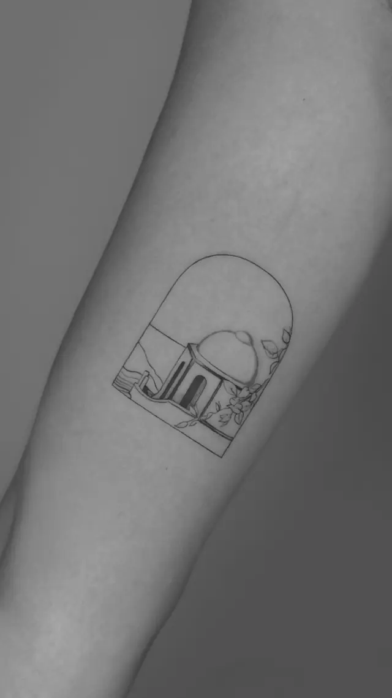
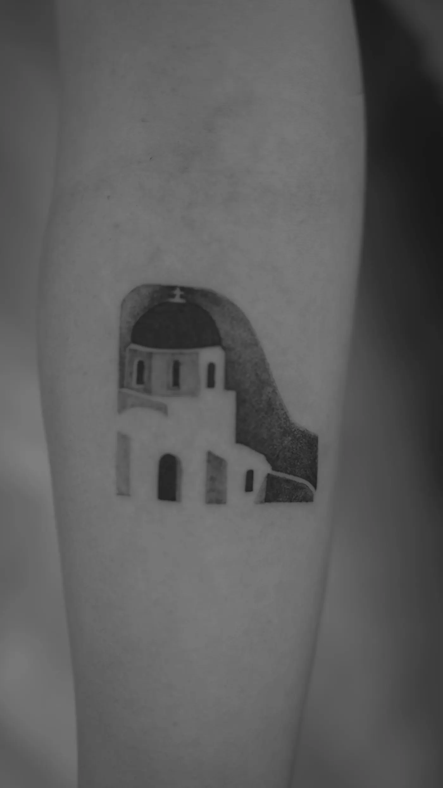
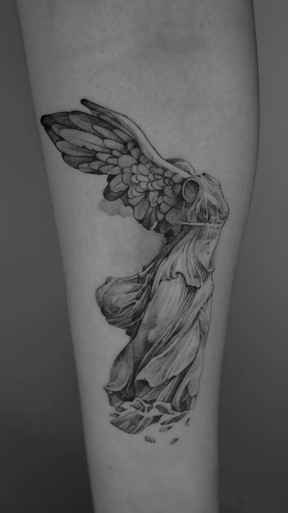
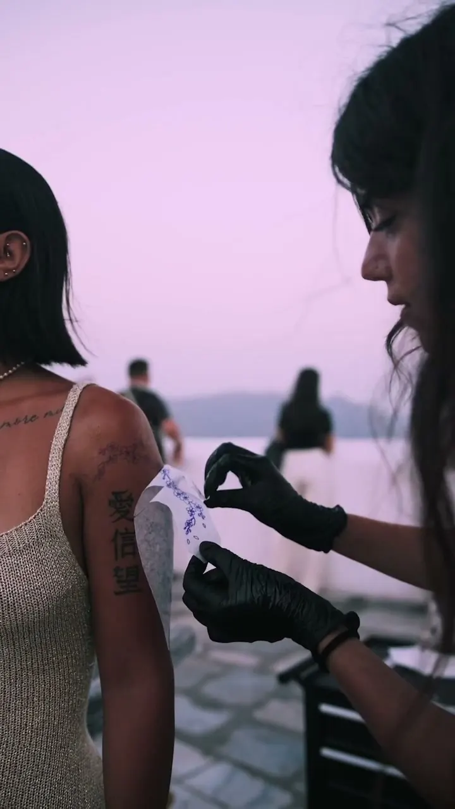
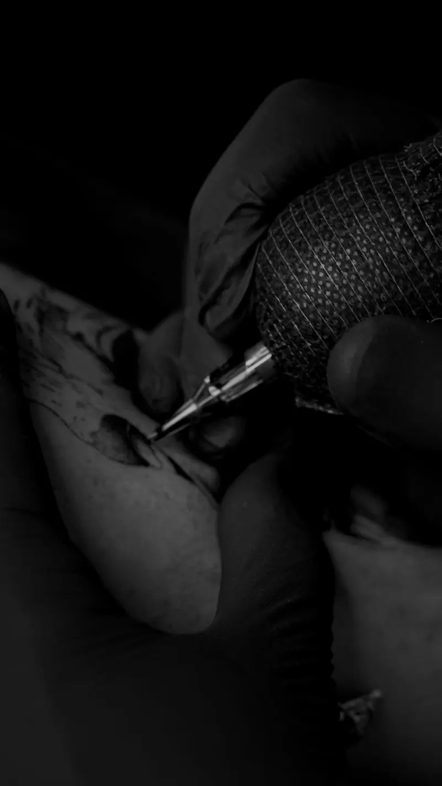
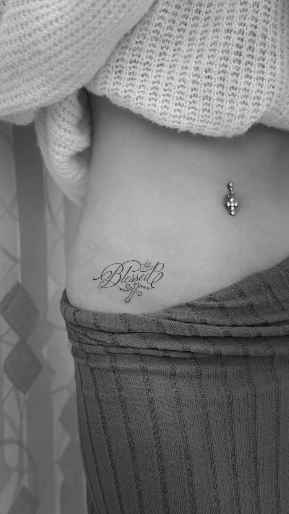
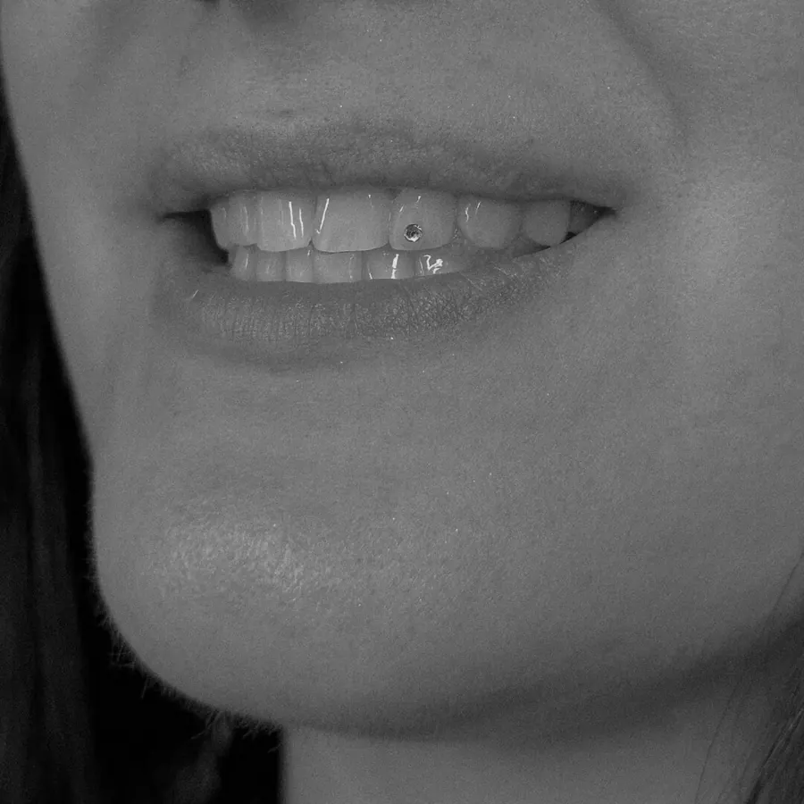

Your custom piece
Planning a tattoo? Share your idea, placement and dates before you arrive, so the design is ready when you are.
Start an InquirySantorini Tattoo Studio — Fira, Greece
Custom tattoo work, considered details, and a studio experience that feels personal from the first conversation — from the team behind Athens Tattoo Studio.
Walk-ins welcome, depending on availability · Daily 11:00–22:00


Selected work
Fine line, minimal and microrealism — much of it drawn from the island itself: its chapels, olive trees, amphorae and myths. Every piece is designed for the person wearing it.
Three ways in
Planned for months or decided this afternoon — there’s a way to begin that suits your trip.

Planning a tattoo? Share your idea, placement and dates before you arrive, so the design is ready when you are.
Start an InquiryWalk in to the studio on Dekigala in Fira, open daily 11:00–22:00 — or call ahead to ask about today.
Plan Your Visit
The artists come to you — a villa above the caldera, your suite, or a yacht at sunset.
Explore Private Sessions
Private & luxury experience
Some moments deserve more than a photo. On-location sessions across Santorini for travellers, couples, honeymooners — and anyone who wants something more personal than a studio visit.
Every session is arranged with the studio. Location, timing and — on the water — weather are confirmed before anything is booked.
The studio
A modern tattoo studio in Fira, created by the team behind Athens Tattoo Studio and The Santttto. Known for fine line and minimal tattoos, the studio welcomes every style — always as custom work, designed for one person.
Spontaneous walk-in or a piece planned for months, the aim is the same: care, respect for the craft, and attention to detail in a clean, calm space.
The light. The contrast.
The volcanic energy.



Beyond tattoos
Book ahead or walk in — both services are offered in the studio, daily.

Piercing by the studio team in Fira. Tell us what you have in mind, or simply come by.
Ask About a Piercing
A small detail with a lot of light. Book a time or ask about walking in.
Ask About a Tooth GemPlan your visit
Questions
Walk-ins are always welcome depending on availability. Whether it’s a spontaneous decision during your trip or something you’ve planned in advance, we do our best to accommodate both same-day and scheduled sessions.
Many of our clients book their session before arriving on the island. This allows us to discuss ideas, placement, size, and availability in advance so everything is ready when your Santorini experience begins.
Pricing depends on the design, size, placement, and complexity of the tattoo. Small tattoos generally start at a minimum session price, while custom projects are quoted individually.
Our artists specialize in fine line tattoos, minimal designs, microrealism, custom concepts, and contemporary blackwork. Every tattoo is designed specifically around the individual and their story.
THE SANTTTO offers a private luxury tattoo experience across Santorini. Our artists can come directly to your private villa, luxury suite, yacht, or selected locations across the island for a discreet and personalized session.
Couple tattoos are one of our most requested experiences. Whether you're celebrating a honeymoon, anniversary, proposal, friendship, or simply sharing a memory together, we create custom designs that feel personal and timeless.
Santorini naturally influences many of our custom designs. The island’s architecture, landscapes, sunsets, mythology, symbols, and atmosphere often become inspiration for unique pieces created specifically for each client.
We offer wedding, private event, and group tattoo experiences in Santorini. From intimate celebrations to larger events, we create curated tattoo experiences designed around the occasion.
Santorini Tattoo Studio
Share an idea, a placement and your dates on the island. The studio will take it from there.